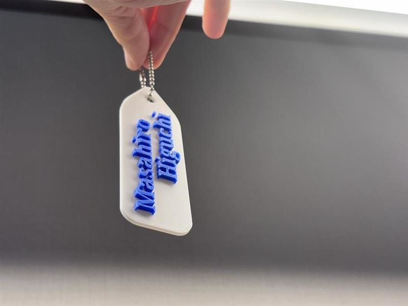

2月1日(土)、京都橘大学と醍醐支所の協力のもと、小学生向けの3Dプリンタ体験教室を開催しました！
このイベントでは、3Dプリンタの仕組みや使い方を学びながら、実際にネームプレートを3DCADでデザインし、3Dプリンタで出力する体験をしてもらいました。
3Dプリンタって何？ まずは基礎から！
最初は「3Dプリンタって何？」「どうやって使うの？」といった疑問を持つ子どもたちも多かったので、まずはよく見かけるペーパープリンタの使い方の流れに沿って、3Dプリンタの基本について簡単に解説しました。
「どうやって立体を作るのか？」「どんなものが作れるのか？」といった話をすると、子どもたちは興味津々。
3DCADに挑戦！ オリジナルのネームプレートを作ろう
次に、パソコンを使って 3DCAD（Tinkercad） に挑戦！
今回は簡単な操作でオリジナルのネームプレートを作りました。最初は「難しそう…」と戸惑う子どもたちもいましたが、実際に操作してみると、「できた！」「もっとカッコよくしたい！」と夢中になって作業を進めていました。
文字を入力したり、可愛い図形を入れたりして、それぞれ個性のあるデザインが完成！
自分の名前が立体になったデザインを見て、「これが本当に形になるの？」とワクワクしている様子でした。
3Dプリント！ 実際に出力してみよう
デザインが完成したら、いよいよ3Dプリンタで出力！
プリンタが少しずつフィラメントを積み重ねながら、形ができていく様子を見て、子どもたちは興味津々。「どのくらい時間がかかるの？」「何色で作れるの？」と質問が飛び交いました。
自分のデザインしたネームプレートが実際に形になった瞬間、子どもたちの表情は大興奮！
「やった！」「本当にできた！」「家に持って帰れるの？」と嬉しそうにしていました。完成した作品を手に取ると、自分で作ったものが実際に形になる楽しさを実感している様子でした。
体験を通じて感じたこと
今回の体験を通じて、子どもたちは 「ものづくりの楽しさ」 を実感できたのではないかと思います。
単に3Dプリンタを見るだけではなく、自分でデザインし、それが形になり、実際に手に取れるというプロセスを体験することで、 「自分でもできる！」という自信や、デジタル技術への興味を持つきっかけ になったと思います。
また、イベントを通じて、「3Dプリンタって、身の回りのものを自分で作りたい！」 と言う子供たちもいました。
「キーホルダーを作りたい！」「ゲームのキャラクターを立体にできる？」と、どんどんアイデアが出てくる子もいて、 未来のクリエイター誕生の予感！って感じがしました（笑）
最後に
参加してくれた子どもたち、そしてイベントを支えてくださった醍醐支所の皆さん、学術振興課の皆さん、杉浦先生、本当にありがとうございました！
今回の体験を通じて、子どもたちが ものづくりやデジタル技術に興味を持ち、将来の可能性を広げるきっかけ になれば嬉しいです。
私にとっても、また一つ小学生に授業をする貴重な経験をさせてもらえたと感じています。
子どもたちの純粋な好奇心や創造力に触れ、教える側でありながら多くのことを学ぶ機会となりました。
今後も、ものづくりの楽しさやデジタル技術の魅力を伝えられるような活動を続けていきたいと思います！